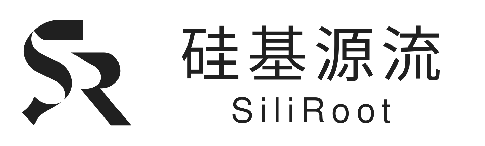

SILIROOT / LOGO DESIGN
从标准几何，到一个完整标志。
SiliRoot 的 Logo 设计衍生小工具前端项目。查看 SR 标志如何由圆、直线和切线构建，或输入两个字母，探索新的共形组合。

Logo 设计
逐步查看 SR 标志的标准圆、直边、相切接点与渐进填黑过程。
双字母设计工具
输入任意两个英文字母，生成六种重叠、切除和负空间关系。
SiliRoot 的 Logo 设计衍生小工具前端项目。查看 SR 标志如何由圆、直线和切线构建，或输入两个字母，探索新的共形组合。

逐步查看 SR 标志的标准圆、直边、相切接点与渐进填黑过程。
输入任意两个英文字母，生成六种重叠、切除和负空间关系。